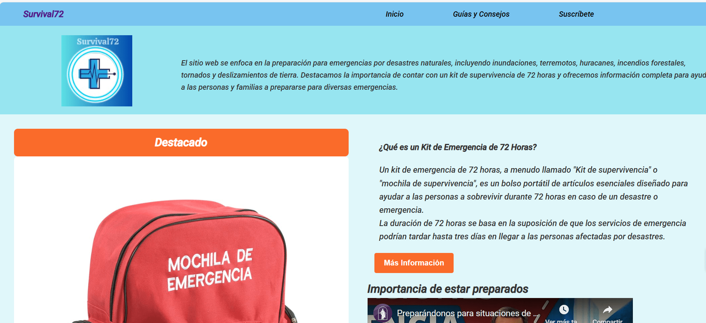
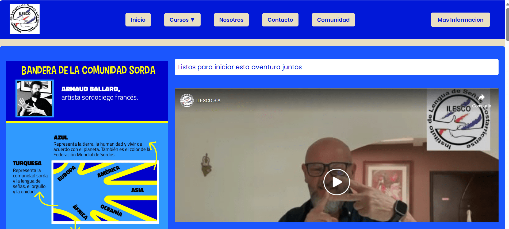
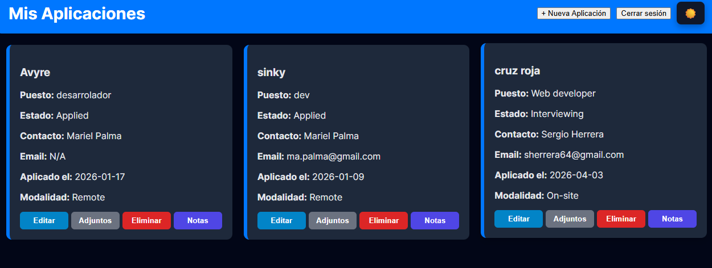

Hola, soy Sergio Herrera
Desarrollador web especializado en construir experiencias digitales rápidas, seguras y atractivas. Transformo ideas en sitios modernos y funcionales que generan impacto real para tu negocio.

Desarrollador web especializado en construir experiencias digitales rápidas, seguras y atractivas. Transformo ideas en sitios modernos y funcionales que generan impacto real para tu negocio.

Plataforma web para un restaurante de comida rápida que ofrece una experiencia interactiva y moderna. Permite explorar el menú, personalizar pedidos con extras, visualizar el resumen en tiempo real y disfrutar de un diseño responsivo adaptado a móviles. Desarrollada con HTML, CSS y JavaScript.
Ver Sitio
Sitio informativo con diseño elegante y responsivo para una barbería. Incluye secciones de servicios, promociones y contacto. Proyecto realizado en el programa Oracle ONE, utilizando HTML, CSS y JavaScript, con enfoque en usabilidad y presencia digital.
Ver Sitio
Página web para una empresa de deportes extremos, destacando tours de rafting, galería visual y contacto directo. Construida con HTML, CSS, JavaScript y un backend en Python, ofreciendo una experiencia inmersiva para los amantes de la aventura.
Ver Sitio
Aplicación enfocada en la preparación ante emergencias. Ofrece contenidos educativos, registro de productos esenciales y consulta de recursos confiables. Desarrollada con HTML, CSS, Java + Spring Boot y base de datos MySQL, brindando una solución robusta y práctica.
Ver Sitio
Plataforma interactiva para el aprendizaje del lenguaje de señas costarricense (LESCO). Incluye menú dinámico, videos instructivos y enlaces a redes sociales. Creada con HTML, CSS y JavaScript, fomentando accesibilidad y educación inclusiva.
Ver Sitio
Herramienta diseñada para optimizar la búsqueda de empleo de manera organizada y efectiva. Ofrece login seguro, formularios dinámicos, recordatorios de seguimiento, notas personalizadas, gestión y descarga de documentos, edición de aplicaciones y actualización de estados. Construida con HTML, CSS, JavaScript y base de datos MySQL, garantizando una experiencia ágil y confiable.
Ver SitioSoy un desarrollador full stack con enfoque en soluciones prácticas y código limpio. Tengo experiencia en Java, Spring Boot, HTML, CSS y JavaScript, creando aplicaciones robustas y escalables. Mi objetivo es combinar tecnología y diseño para entregar proyectos que sean útiles, accesibles y fáciles de mantener.